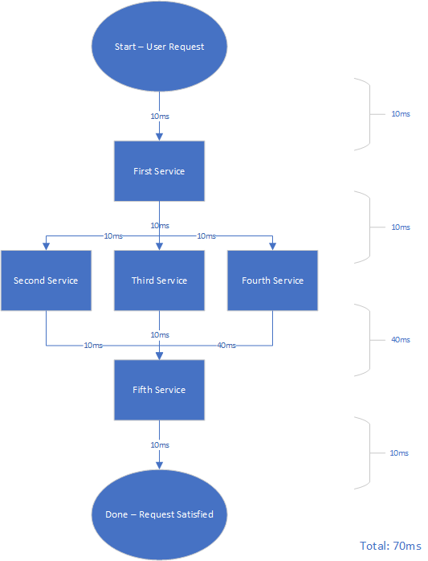

Distributed Architecture Strategy
Much of our new design is oriented around a much more distributed architecture than we’ve normally used at ATLAS. While we are a little late to the party, that also means we have the chance to learn from our forebears and not make the same mistakes.
Many people think of microservices when they think of distributed architecture. While this is the primary implementation today, distributed architectures have been around since the dawn of computing. They can take many different forms, each with their own pros and cons. At ATLAS, we should be hesitant to refer to our version as “microservices”—not out of dislike for the pattern, necessarily, but because the term brings several implications with it. Being realistic, a full-on microservice-oriented architecture will be challenging for us to achieve simply due to our staffing limitations.
Throughout this document (and any time we discuss architecture going forward), the terms “microservices” and “distributed architecture” will be used fairly interchangeably. Documentation should emphasize the ideal architecture, even if in practice we must make some sacrifices and compromises.
Table of Contents
- Distributed Architecture Overview
- Documentation
- Application Design Philosophy
- Deployment Tactics and Service Management
- Summary
Important Terms
In the scope of this document, there are some terms we should set definitions for to avoid confusion.
- Granularity: a measure of the degree of separation, isolation, and individualization given to units of a system. A system can be said to be highly granular when its implementation involves many small, distinct units working together.
- Service: any discrete, resident application whose purpose is to react in some functional way to requests or events.
- (This is called out to denote a difference between what is considered a “service” here—just the conceptual object—and the more concrete patterns we usually take for granted when we discuss services.)
- Robustness: the measure of a process’s ability to cope with erroneous input or faults gracefully.
- Uptime of scale: Rather than the literal uptime of a given process, uptime of scale is the healthiness of a distributed system as measured by its adherence to steady state over a window of time.
- In other words, the uptime of scale is the measurement of a given system’s ability to sustainably maintain its scale.
- This differs from availability in that a service can still be available while experiencing a low uptime of scale.
Microservices Example
A microservice-oriented architecture might propose that the operation “run a report” (as it exists in current ATLAS, newer designs notwithstanding) consists of several distinct services. It may have services for:
- Loading metadata and compiling the report (e.g. AdHocs)
- Performing validation (
IsValid) - Performing SQL replacements (
RunDynamicSql) - Executing report SQL
- Executing post-processing
- Performing Excel exporting
- Delivering results
Each of these services are currently just steps of the monolithic report pipeline. However, due to the monolithic design, each of these steps has innumerable cross-cutting concerns. Worse, this logic has far-reaching and omniscient dependencies throughout that service. As a result, the entire report pipeline incurs the risk of regression even if only a single step needs to change. Additionally, even a transient failure at any single step causes the entire pipeline to fail.
Exactly how granular your services should go is a subject of hot debate in the field still to this day. One could easily imagine each of those steps being further broken into smaller services: a service for delivering FTP results, a service for delivering email results, a service for executing BI reports, a service for executing AdHoc reports—the list goes on. This is part of the hesitation to use the word “microservices” when describing our distributed architecture. While there could be value in going more granular with these services, that value should be measured during design and balanced against the increase in complexity and overhead.
When to use Distributed Architecture
Distributed architecture is a great solution to many problems, but it does not solve every problem. Certainly, it isn’t the right solution at all for some problems. These distributed service patterns, like microservices, bring with them a decent amount of overhead and complexity. If you select them to solve your design problems, you are making a trade-off. The amount of benefit you gain can be conceptually represented as a “multiplier” that depends on your problem. Some problems have huge multipliers—basically anything that needs to scale quickly and widely, or anything which needs highly isolated parallelism. Some problems have near-zero multipliers, or even negative multipliers.
It is very important, before deciding to go with microservices or similar architectures, that you evaluate your problem’s multiplier. Read the Why Distributed Architecture? section to help figure out how much your particular engineering problem will benefit from distribution. As an example: relatively simple applications, temporary solutions, quick fixes, dirty hacks, and some client applications have very low multipliers. From a mindset perspective, it’s probably wise to always begin with a more monolithic design. Only break it down when you discover the advantages of doing so outweigh the disadvantages (more on that strategy later).
That said, don’t be afraid of choosing distributed architecture where it makes sense. This section exists more to warn you against using it for trivial applications or forcing it to apply to problems which resist it. There is no mandate that says “all projects going forward must be designed using a distributed architecture,” but we now have the infrastructure to support it more robustly than ever before. Instead, this document should serve as a helpful teaching tool and guide for why you might want to use these patterns, and how to use them successfully.
Why Distributed Architecture?
Detractors of microservices as a pattern often cite that the complexity of the pattern isn’t worth the gains. The claim is that this complexity increases exponentially as the number of services increases, yet in order to “do it right,” one must create highly granular services—which, of course, leads to high complexity.
It’s certainly irrefutable that system complexity grows exponentially as the number of services increases. However, the granularity of the system is a variable that can be tweaked to avoid complexity. As with any architecture, you measure the strengths and the weaknesses and choose the right one for the job. Distribution is not the correct solution for every problem, but it’s very effective at solving certain types of problems.
Here are some of the benefits of choosing a distributed architecture. If your business problem aligns well with these benefits, it increases that conceptual multiplier. These are the reasons you might choose this architecture over others:
- Reduction of friction in development and deployment
- Improves the development and debugging experience by isolating effort into a single module
- Tends to make deployments deterministic and far simpler, more robust
- Enables Continuous Deployment, which ensures a fast stream of improvements and a quick time-to-fix for defects
- CD is challenging with monolithic applications because deployment takes so long and regressions can be very broad. A single microservice can build and deploy in seconds, and issues are usually isolated to that one service
- In our ecosystem, we’re looking at time improvements measured in hours for many defects; the test, deploy, re-test cycle for a fix is significantly expedited
- Zero-downtime CD is possible, if the infrastructure is designed correctly
- Isolation of responsibilities and concerns at the module level
- Lends to better designs, more future-proof APIs, and fewer defects
- Allows a much greater ability to test modules individually, which increases code quality and robustness
- Scalability
- Makes our business more flexible
- Allows us to alleviate bottlenecks and improve customer experience as needed with almost no spin-up time
- Reduces friction between dev and ops teams
- Sharing of components and services
- Greatly speeds development and enhances products with less dev effort
- Multiplies improvements across all participating products
- Infrastructure and language freedom
- Services can be written in the best language for the job
- By design, a microservice should be as infrastructure-independent as possible to increase its motility
- Reduces cost to the business
- Separation into distinct services leads to more complete applications
- Microservices are first-class applications with their own resiliency, high-availability strategies, fault tolerance, error handling, and so on
- This not only makes applications more resilient, it also tends to improve visibility and logging/metrics
- Enables cross-functional, smaller teams to be more productive
- Without monoliths full of omniscient dependencies, it’s much easier for any developer to work on any piece of the puzzle
- This reduces costs and increases developer utilization
- Reduction in business risk due to better facilitation of agile development
- Since each piece of an application is discrete, agile teams can produce easily deliverable units
- Modules that change as a result of agile feedback loops are easily replaced with minimal lost effort
Granularity
This is it: the million dollar question. How granular should your services be? How much should you break up functional units into individual services versus grouping them at higher levels of abstraction? Sadly, there is no easy answer. Instead, for every use case, you’ll need to evaluate the advantages and disadvantages to find a good balance point.
Advantages:
- Every level of granularity is another unit of scaling, high-availability, and logical separation
- Each granular service introduces another level of reusability that other services can opt into
- Each granular service is easily self-contained, increasing efficiency, robustness, and project management flexibility
- Application failures tend to be isolated to single small, replaceable, easily fixable units
- Service failures almost never cause system downtime once the functional units are granular enough
- Parts of an application will continue to operate even if others are down
Disadvantages:
- Every level of granularity increases complexity, eventually to the point of making the architecture incomprehensible
- Even with extensive documentation, building a mental map of a highly-granular microservice-oriented application requires a great effort
- Each granular service is another item that must be managed, maintained, developed, and owned
- Each granular service introduces additional overhead on a request, especially in sequential operations
- Application failures are more challenging to track down due to the high number of interconnecting parts
The guideline for granularity is pretty simple, though it’s more philosophical than scientific. Make every unit as granular as you can, so long as you are able to amplify the advantages and minimize the disadvantages. If going more granular no longer amplifies the advantages, or raises the disadvantages to an uncomfortable level, your unit is granular enough.
One could imagine, especially as we first dip our toes into the waters of distributed architecture, we’ll be more uncomfortable than we need to be about the disadvantages. While we definitely must be mindful of them, we must also remember this is a new paradigm for us; we’ll need to change the way we think. As you’ll see later, there are tools available to help us mitigate the disadvantages.
Granularization Example
Earlier, the monolithic process of running a report in current ATLAS was broken down into 7 services. What if it was further broken down and made more granular? Here’s how that might look:
- Metadata services:
- AdHoc Metadata Service
- User Report Metadata Service
- BI Report Metadata Service
- Validation services:
- AdHoc validation service
- BI Report validation service
- Pre-processing services:
- Tokenization service
- SQL transformation service
- Object filter service
- AdHoc compilation service
- Report Execution service
- Post-processing service
- Formatting services:
- Excel formatting service
- PDF formatting service
- Access formatting service
- Delivery services:
- Web delivery service
- Email delivery service
- SharePoint delivery service
- FTP delivery service
- Coordinator service
We’ve gone from 1 monolith, to 7 services, to 19 services. Is there value in making the process so fine-grained? Let’s revisit the advantages.
- We can now finely control exactly how much of every kind of work we can perform.
- We run far more BI reports, for example, so we could ensure we have far more BI Report Metadata service instances than AdHoc Metadata instances.
- Reporting Studio and other projects could use whichever pieces of this pipeline work for them.
- One project could use all of it, except it might not allow exporting to Access or delivery via FTP. It may instead add cloud storage delivery.
- It could use a separate coordinator that knows how to integrate the services for its use case, but still consumes many of these same services.
- One Email delivery service could crash, but there are at least two instances running at all times. Other delivery types are unaffected.
- All FTP delivery services could simultaneously crash, but other delivery services keep functioning.
- The FTP service fix for the crash affects only the FTP service instances.
- Each of these smaller services could be developed by a different engineer.
- So long as the contracts between services are well-defined (and they must be no matter how granular the scale), the developer’s scope of work is greatly narrowed.
- The small unit can be more easily and completely tested.
Sounds amazing so far. It’s super scalable, robust, smooth to develop, and highly reusable. This design checks all of the boxes, right? Well, let’s take a look at the disadvantages too.
- There are nineteen services.
- Keeping track of what each of them do, where they live, how they’re deployed, their communication contracts, the health of each set of instances, and where along the path a given request currently lies are engineering problems all their own.
- A service had to be introduced (the coordinator) to manage the lifecycle of a request, further increasing complexity.
- This example scenario can occur:
- “An FTP service instance just crashed.”
- What happened to the work it was doing? It probably got re-queued.
- “Now every FTP service instance has crashed.”
- Which message killed the FTP services?
- The logging and correlation metadata had better be very strong; otherwise, prepare to spend hours digging around trying to figure out what happened.
- “I found the request that killed the FTP instances, but I need to debug through the code to figure out the fix.”
- You must either spin up nineteen services on your local machine to step through the process in its entirety…
- …turn on some kind of remote debugging (which is insecure and not going to happen)…
- …or grab the input for just this particular service, stand it alone up on your workstation, and feed the message through manually.
- The latter option will almost always be the correct answer.
- “An FTP service instance just crashed.”
- Each of these services introduces a communication overhead.
- A given request in this design is likely to go through 9 hops before finishing. Assuming a network latency of 5ms and a general API server latency of 5ms, that’s 10ms per hop. We’ve added almost 100ms in latency to this request just for communication.
- Each of these services introduces a resource overhead.
- A given service instance probably needs a minimum 100 MB of RAM dedicated to it just for framework overhead and runtime.
- Given that we want to have many instances alive for distributing workloads and maintaining a high availability, let’s assume we have a total of 100 instances running between all 19 services. That’s almost 10 GB of RAM dedicated to overhead.
- Each of these services introduces a development overhead.
- Getting started on each service involves the creation of a new repository, and in some cases, a new project through the PMO.
- Someone has to own this project and manage its deployments.
- There is always some amount of boilerplate code or configuration for setting up a service, even trivial services like a basic website serving plain HTML.
Without any additional tools to help, this sounds rough. However, Kubernetes was created to help mitigate these disadvantages. It is the key to minimizing them. With Kubernetes, we can let go of the need to know and manage where each service lives. We can define how they’re deployed via script and get deterministic deployments. We can easily monitor the health of the deployment. We can minimize network overhead and cap resource overhead. K8s alone helps remove a lot of the pain from this 19-service design. On top of that, there are several other tools and methodologies we can employ to reduce the impact, such as serverless (functional) paradigms.
Is the 19-service design worth choosing, then? Well, realistically, the best design is probably somewhere between the 7-service and 19-service ones. Splitting validation into two services probably does not amplify the microservice advantages in practice. The metadata services aren’t likely to benefit from the scalability of being so granular. Reports today don’t even support FTP or SharePoint delivery. No matter the scale, though, you’re going to run into some of these roadblocks eventually.
The remainder of this article is going to help you address the disadvantages and roadblocks of microservices at scale. We will cover those tools, methodologies, and patterns that make developing microservices much more fool-proof and allow us to squeeze every last drop of value out of them.
Documentation
Unsurprisingly, the number one strategy to deal with the unwieldy nature of microservices is to produce reliable documentation. Lack of documentation is a serious business risk that doesn’t get enough attention no matter the architecture. Not only is the chance of introducing regressions into existing systems higher, but the tribal knowledge that went into developing and maintaining legacy applications is often lost forever. Documentation helps during development as well: the more informed the team members are about the design, APIs, and philosophy behind them, the better decisions they will make during development. It makes developers more efficient, less stressed, and more cohesive.
The ugly, unavoidable truth is that documentation is expensive. Producing it—especially when a product or application is being developed by a small and/or tight-knit team—is often unattractive. Frankly, even going through a formal design process at all is sometimes expensive, as developers spend tens of hours expressing on paper what they feel they already know in their minds. Being given the task of writing documentation is seen as “getting stuck” with it; no one wants to do it. Worst of all, it requires constant maintenance to keep current, as the only thing more harmful than no documentation is bad documentation.
Given that it’s so expensive and cumbersome, yet so important to the success of distributed applications, how can we reduce the cost and still achieve a high quality of documentation? The solution is simple: centralization, automation, and prioritization.
Documentation Centralization
The most aggravating thing about keeping documentation current is that it usually lives in multiple places. Code lives in Git, but documentation often lives in some combination of OneNote, SharePoint, and a Word doc in an e-mail someone sent you 6 months ago. As a result, you find yourself flipping between several different places trying to keep track of them all. This wastes significant time, usually tens of minutes per instance as you have to rediscover where everything lives. If documentation were centralized and organized, however, it would be easier to update and effortless to reference.
To make sure that the documentation is not only discoverable, but free of administrative roadblocks, here are the recommendations for centralizing documentation:
- Documentation is published to a central site.
- All engineers in the company have access to the entire site. The docs are not walled off by teams.
- This allows people to answer their own questions where possible.
- The published documents live in a location wholly dedicated to presenting documentation and nothing else.
- Any existing docs should be migrated to the site over time.
- The pages are logically ordered by projects, domain, and other meaningful categories that minimize navigation time.
- Documentation is centrally searchable.
At a company of our scale, it should be reasonable to centralize all technical documentation into a single location. If the company grows significantly, the sheer amount of documentation could become impossible for any organization scheme to manage. At that point (and only at that point) we can consider breaking the documentation out into logical sub-units.
Documentation Automation
You’ll notice that this very document lives in a Git repository. It is automatically published via CD to a documentation site, and it’s written in Markdown. Each of these is critically important to the upkeep of this document.
- Storing documentation in Git:
- Storing docs in Git allows several people to edit the same document and merge changes together trivially.
- It enables deployment integrations.
- It provides free version control.
- Everyone’s been in a situation where the design document was “Product Design V4 Final - Final.docx” and it’s not helpful.
- Git is a toolset many developers are already familiar with.
- While Git itself is not the requirement, it happens to fulfill these requirements very well.
- Automatic, continuous deployment to the central site:
- Documentation is a living thing. It evolves, especially during development.
- Making sure the latest version is always available from an authoritative location is critical to the success of the documentation effort.
- Decisions made against an outdated copy of the documentation are bad decisions by default.
- Markdown:
- Markdown itself isn’t the requirement. The true requirement is that documentation be written in a universal, easy-to-write text-based markup language.
- It must have low friction and lots of tooling in its ecosystem, but still support enough features to be useful.
- HTML is another example option.
- Although, one could argue that it fails to meet the “easy-to-write” requirement for someone just trying to hash out some docs.
- Markdown is the best of both worlds: HTML support when you need it, easy and intuitive syntax when you don’t.
- Markdown’s ecosystem is also how we’re able to so effortlessly publish the documentation site.
- In this case, the tool
mkdocsgenerates a site with top-nav and left-nav automatically prepared for you.
The particular combination of Git + TFS deployment + Markdown isn’t necessarily the best option. However, it is how this document was published, and this document was published using the same principles that will make other documentation efforts successful. Many products exist which provide the same advantages (e.g. Confluence); feel free to use them. Just keep centralization in mind: the docs need to be in one place.
Other Automation
Aside from the automatic deployment of documents to a centralized location, there are other things we can automate to make doc maintenance simpler. Some of these tools we’re already familiar with and some of them will be new to us, but each of them is critical to sustainable docs.
Most important, probably, is the documentation of code itself. Self-documenting code is already a staple of good engineering. When documentation must be written, however, putting the documentation in the code itself is natural for developers. It’s more likely to get updated when the functionality changes. Taking it one step further, publishing it automatically can be achieved via several tools (often built into modern IDEs and compilers, like JavaDoc and C#’s XML documentation).
The automatically-generated documentation from code comments is great for internal reference, but what about externally-facing docs? Sometimes the internal docs work for external consumers as well, but often you’ll want to add some additional elements to API documentation, such as sample code or visualizations. This is where tools like Swagger UI come into play. Often, in cases like this where external customers will be consuming the documentation, it’s also wise to treat the docs as a deliverable themselves rather than a byproduct of development. You’ll want to devote some time to polishing them up and making sure they’re accurate; then, rely on automation to keep them up-to-date.
Documentation Prioritization
You’re probably already practicing centralization and automation to some degree. The real trick to help documentation efforts be successful is this one: prioritization. Specifically, acknowledging that some forms of documentation are inherently less valuable than others, and should be given less effort.
Before we can discuss priority, let’s look at the distinct varieties of docs. These definitions aren’t exactly standardized, but should certainly be agreeable.
- Architectural documentation — lays out the concept behind the systems, how they work together, and what the system should achieve. Ensures that the system meets the project requirements. Usually purely conceptual.
- Design documentation — concretely defines the patterns and idioms to be used in the implementation of the architectural design. Dives into the details rarely, but still paints a solid picture of what the final code will look like. Often combines the conceptual design with practical solutions.
- Implementation design — The collection of interfaces, code modules, services, and solutions that will be created to reflect the design documentation. Usually purely practical.
- Code documentation — comments on methods, parameters, and modules that expose intent and usage guidelines for code.
- API documentation — details the purpose and parameters of an API for internal or external consumers, including the API’s communication models. Sometimes, the API documentation and the code documentation are the same thing.
There are certainly more, but these are the most common and most relevant to our discussion. This philosophy prioritizes documentation in this order:
- Architectural documentation and API documentation.
- Design documentation.
- Code documentation.
- Implementation design.
Implementation design is the least valuable type of documentation. Implementation can change constantly, quickly, and sometimes unpredictably (e.g. due to hotfixes). Keeping an implementation design current is essentially equal effort to its corresponding development. It’s not worth spending the time to carefully document the code so closely, even after the fact.
Code documentation is very important, perhaps the most important type of documentation for a product’s technical success. However, it falls low on the list of priorities because it should be happening anyway. No extra effort should be expended to create it. If developers are not documenting their code well, or not writing self-documenting code, actions should be taken to correct the deficiency. When done well, it also serves much the same purpose as the implementation design. Developers should be able to trivially reverse-engineer the meaning and purpose of any component or unit.
Design documentation and architectural documentation are important because they both capture intangible elements of the design that cannot be easily discovered otherwise. Tribal knowledge, business decisions, design philosophies, and historical context are all made available through these documents. Essentially, they act as the rubric by which the implementation is measured. In an imaginary worst case scenario where the working implementation was lost, you should only need these two documents to produce a new one. It might not be exactly the same, but it will meet the same requirements. Of the two, design documentation is less important than the architectural documentation only because the design can change without affecting the architecture. Imagine the design docs as an implementation of an interface in C#, where the interface is the architecture.
API documentation, then, is the only purely-practical piece of documentation that holds a high priority. Much of this effort is spent making sure that your software, which is meant to be consumable since it has an API, is easy to integrate. Maintenance effort spent here, unlike in implementation design, is always worthwhile as it directly contributes to the quality of the product. Additionally, a well-designed API should change fairly rarely (even though the implementation might change constantly), minimizing the upkeep. Further reducing the upkeep are tools that can automatically generate API documentation or assist in creating it, which is never possible for implementation design.
Application Design Philosophy
In the distributed architecture world, it helps to think of application design a little differently. Often, we tend to think of applications as expressions of a product or feature set. Especially when coming from a monolithic n-Tier Architecture background, it’s easy to see an application as similar to an engineer itself: when given a problem, it figures out how to solve the entire problem and then solves it.
For distributed architectures, it’s better to instead think of each service as part of an assembly line. The service is responsible for taking the input (let’s say a car door) and producing an output (attaching the door to the car). Its only responsibility is to take doors and attach them to cars. In fact, it doesn’t even really care about the car or the door; it just attaches door-like things to objects on the expected attachment points. If the attachment points don’t exist on either the “door” or the “car”, there’s a problem.
As we’ll learn later on, even the attachment points can be somewhat flexible. If the door has fewer attachment points than the car, but they still line up, the service might attach them anyway. If the door has more attachment points than the car, but the most important points still line up and the door still fits, the service might attach them anyway. This ensures that we don’t need to retrain the service (i.e. rewrite code) when the door or car change slightly. The service can continue trucking along.
The 10-Hops Rule
The 10-Hops Rule is a guideline invented to help ensure overhead is minimized in microservice designs. The name is pretty self-evident to the philosophy: try to keep the satisfaction of any given user-level request below 10 service hops.
This is just a guideline. Going over 10 hops doesn’t immediately cause the entire design to fall apart like a bad game of Jenga. However, remember that every hop adds some amount of latency overhead—10ms is a good rule of thumb to help with planning. By the time you get to 10 hops, you’ve added 1/10th of a second to the processing time of every user-level request simply through service communication.
The 10-Hop Rule also helps control complexity. If a single request must pass through 50 services on its way to completion, keeping track of where that request is at along the line becomes much more challenging.
Keep in mind that we’re talking about 10 sequential hops. When you’ve got some services talking asynchronously to each other, or one service talking to many services at once, you can determine the overhead using a sort of tiered diagram, as shown below.

Note that the third tier’s overhead isn’t 60ms - service 2 and service 3 finished communicating before service 4, so only 40ms were spent waiting at that tier. To put it simply, each tier has as much overhead as the slowest service in that tier. Complexity, however, is still measured at the total number of services required to satisfy the request.
Fault Tolerance
One of the bits of wisdom learned from our forerunners in the microservices space is the importance of building tolerant systems. While tools like Kubernetes allow us to basically infinitely maintain a system through anything but severe crash loops, that doesn’t mean a given service’s design should depend on such behavior. Every piece of a system’s puzzle should still be a complete application; that’s one of the benefits of a distributed system.
Measuring the success of a distributed system by looking at single unit uptimes is a mistake. However, in aggregate, the uptime of the fleet contributes to the system’s uptime of scale. In other words, if your services are constantly crashing and having to start up again, you’re wasting processing time and potentially impacting metrics. This is the lesson others have learned: ensuring that the system’s units are tolerant of faults and errors is critical to maintaining a healthy ecosystem.
There are, of course, times when the application must crash. This should usually be mitigated to infrastructure-level errors that are unrecoverable. Otherwise, the top priority is making sure that the service is able to recover cleanly from these sorts of concerns:
- Bad or malformed input
- Erroneous requests
- Common runtime exceptions
- Temporary resource unavailability (and other transient faults)
- Service-to-service contract mismatches
Tolerance doesn’t just mean recovering from issues without crashing or corrupting internal state. Tolerance can also mean being lenient on how many problems can exist in an input while still being actionable, for example. The objective is to ensure that small changes in service-to-service communication, transient faults, miscommunications, file I/O issues, and such do not cause misbehaviors in the application.
Additionally, we want to ensure that compatibility remains high. APIs should be designed in such a way to facilitate evolution without requiring changes on consumers. System infrastructure changes (for example, changing the URI of a resource) should be mitigated through tools like Kubernetes, where they can be abstracted from the beginning, or obviated through a no-deploy central configuration mechanism (again, perhaps in Kubernetes).
Avoiding Retry Storms
You might have read the previous section and thought, “Great! I can make sure all my service-to-service requests are tolerant trivially. I’ll just add a retry to the request!” Congratulations, you just introduced a flaw that could take down the entire system—maybe the entire data center.
The difficulty in distributed systems is the scale: you might have 100 instances of a given service running, all getting requests at the same time. These 100 instances may, themselves, depend on another fleet of services, and them another set, and so on. If Service F becomes unresponsive for some reason—say a network resource temporarily becomes unavailable or something like that—then you end up with a traffic jam at that service. All of Service E backs up now, followed by Service D, C, B, and eventually A. It becomes a standstill.
“That’s OK,” you say. “As soon as the network resource becomes available again, the jam will resolve.” Perhaps that’s true, except that Service E is programmed to retry its accesses to Service F. It turns out that Service D also retries its accesses to Service E, and Service C does the same with Service D. A lot of applications like to use ~1 second as a retry wait between attempts…
Suddenly you have an exponential explosion of network traffic, as every service in the entire ecosystem starts retrying at the exact same time over and over. Services crash entirely because they starve themselves of network resources, infrastructure dies due to excessive load, and you more or less DDoS the data center from the inside. This is a retry storm, similar to the classic Thundering Herd Problem. Thankfully, it’s easily mitigated.
Principles of avoiding retry storms:
- Know when to implement retries at all.
- As recommended by Microsoft’s general guidance on retries (for Azure, but applicable to any distributed system), it’s not usually wise to implement retries at every service along the path of fulfilling a request. In many cases, the onus of retrying should be on one service—usually the one most user-facing—or the client application itself.
- This removes several aggravating factors from the retry storm scenario.
- Never infinitely retry. Eventually, allow the service to fail the request.
- The threshold for this will differ based on use case, but there comes a time that the request can simply no longer be fulfilled.
- Usually, this is implemented as a cap on the maximum number of retries.
- Never retry at the same interval between each attempt.
- Always use some sort of back-off strategy to ensure that your retries become less and less as the issue persists.
- Introduce some randomization to your retry intervals.
- That way not every instance backs-off and retries at the same time (in the case where they all run into issues at similar times).
- Consider implementation of the Circuit Breaker pattern instead of naïve retries.
- This can be especially valuable when communicating with external services where failure is more likely to occur and be unrecoverable (as far as we’re concerned).
- However, it can also hold value within ATLAS when communicating with highly-shared services like ATLAS Platform functionality—your application should more or less behave as though those services are external.
These mitigations cannot completely eliminate retry storms. No matter what, they will occur to some degree any time the system ends up in a bottleneck state and the bottleneck becomes clogged. By following these guidelines, however, the impact can be minimized.
Communication Contracts
One of the pesky recurring problems of software design is the management of communication contracts between services. Whether it’s an evolving API, a code-level interface, or the response model from a service, it seems like a common source of regressions whenever two applications need to talk to each other. Since distributed architectures are built entirely on the concept of applications talking to each other, they can sometimes be especially prone to problems arising from miscommunication.
There is no “magic bullet” solution to the issue of communication between applications. In each instance, for both the API into an application and the responses coming out, one must exercise caution and diligence in design. As a general philosophy around how to design your communication contracts, try to follow Postel’s Law.
An implementation should be conservative in its sending behavior, and liberal in its receiving behavior.
— Jon Postel
To break this philosophy into more digestible chunks:
- Ensure your communication is as brief, small, and relevant as possible.
- This also means making sure your APIs are designed appropriately, such that each call is responsible for as little as possible.
- Responses from services should be very concise and contain only the immediate response to the request.
- Where possible, use schema-less models.
- Serializing and deserializing JSON or XML objects seems like a natural fit for service communication, but those formats enforce a schema that must be adhered to.
- If the schema is not met, the object will not deserialize, breaking the contract.
- This often causes minor changes to have a ripple effect throughout an ecosystem; even correcting a typo in an API spec can be impossible due to the massive number of consuming applications.
- One example schema-less pattern is the
TolerantReaderpattern.
- Where possible, avoid discrete versioning.
- (For example, moving from
/api/v1/to/api/v2/is a discrete version change.) - Never mark a new version for every change to the API.
- Creating a new API version implies that the old version must be supported—not just individual pieces of it, but the entire contract. This requires the creation and enforcement of SLAs around its lifetime, deprecation, and eventual discontinuation.
- In the meanwhile, you likely incur technical debt supporting two different contracts.
- Versioning is painful for consumers. It forces them to adopt a new contract which, even with good documentation or release notes, requires thorough review and potential downstream overhauls. It discourages adoption of your API.
- That said, there are some scenarios where overhauls of your contract are required. In those scenarios, versioning can make sense.
- Probably best practice is to leave the API open for versioning (e.g.
/api/v1/) but only take advantage of it when absolutely required.
- (For example, moving from
- Utilize abstractions to remove dependencies on the contract details.
- This allows your logic to be ignorant of contract changes, except in the single source of translation (where the contract object becomes a DTO).
- Be explicitly backwards compatible…
- If you must advance your API version to v2, for example, create an SLA that dictates how long you will continue to support the v1 API.
- Ensure API consumers are informed of this SLA so that appropriate accommodations can (eventually) be made.
- …but not forever.
- One of the flaws of supporting a highly-tolerant system for a long time is the accrual of technical debt in supporting many layers of backwards compatibility.
- Once a contract has been obsoleted, make and adhere to a plan to remove it entirely.
- Disable it programmatically, if possible, to reduce maintenance cost.
- When the API must change, try to make only additions.
- Given the above guidelines, adding to an API will not break existing consumers even if the new endpoints obsolete the old ones.
- Remember that the obsolete endpoints should be removed at a planned, communicated time.
- Have a clear definition of the required attributes in a contract, and concern yourself only with those.
- To put it another way, your code may not be the only consumer of the service, and therefore the response may contain properties you don’t recognize. Discard them.
- On the other hand, if your code requires certain properties from the service’s response that aren’t supplied, and those properties were previously part of the contract, you have an error scenario.
- Or, for the same reasons, the API endpoints may support properties or parameters that your logic isn’t aware of. Ignore them.
- If the service requires that your call provide attributes/parameters it can’t possibly supply, you have a contract issue.
- It only introduces regressions to attempt to force contract compatibility with “fake” parameters or
nullvalues (unless the API docs specifically indicatenullas a way to opt-out of that parameter). Even if it works, you’re taking dependencies on incidental behaviors, which violates any contract.- The service owner is not required to uphold incidental behaviors, which means your consuming logic is doomed to fail.
- Instead, where possible, reach out to the owner of the service and figure out how to reconcile the contract.
- If no reconciliation is possible, you’ll need to either legitimately acquire the missing attributes/parameters (perhaps from another service) or find a different service to fulfill your request.
- To put it another way, your code may not be the only consumer of the service, and therefore the response may contain properties you don’t recognize. Discard them.
Obviously, there can be exceptions. This is a set of guidelines, not rules. Just remember that every compromise on this philosophy increases the chance of regression and the cost of maintenance in the communication between applications.
Deployment Tactics and Service Management
Creating an application is about more than just building the systems. You also must design and implement the deployment and management strategies for the application. Organizations (including ours) often have methodologies for these DevOps tasks whether they have dedicated DevOps engineers or not, but with distributed architectures it’s critically important that these existing strategies are rethought. The rigors of these systems are often more complex, although not necessarily more challenging, than monolithic systems. It is ultimately more beneficial to discuss the health of a distributed system in terms of uptime of scale rather than traditional metrics.
It is strongly recommended that each project team have at least one member fulfilling a DevOps role to design, build, manage, and monitor the deployment of complex distributed applications. However, this isn’t always feasible for a number of reasons. As a result, the entire development team for a project backed by microservices should be fully aware of these tactics, strategies, and patterns for successfully administering and managing the application. To be successful, everyone must participate in DevOps.
Service-Level Agreements (SLAs) and Metrics
Especially when dealing with services at a scope typical of microservice architecture, it is necessary to clearly define SLAs for systems. Without solid lines for “success” and “failure,” these states are open to interpretation both from customers and internal stakeholders. Inevitably, your team will find itself constantly failing as the goal posts move based on shifting priorities, customer happiness or unhappiness, and internal perception. Establishing these contracts (in the abstract sense, though sometimes also literally) allows you to take control of the success and failure states and base them on concrete, measurable metrics.
SLAs are comprised of one or more service-level objectives (SLOs). Your ability to base the SLOs on actual metrics ties directly to your system’s ability to measure them. Thus, it’s incredibly important to make recording metrics a first-class item of your design. Even if the metric isn’t used as part of an SLA, record it anyway. The more data you have about the operation, state, and throughput of a system, the more information you have to diagnose issues.
Good SLAs vs. Bad SLAs
The successful implementation of SLAs requires that they meet several criteria. The only meaningful SLA is one that actually has value and can be measured; if it can’t be measured or it can’t be met, it’s not useful.
SLA requirements:
- It must be achievable through normal maintenance and upkeep.
- In other words, the SLA must not require over-allocating staff or working overtime in order to meet it.
- It must be achievable and reasonably future-proof with infrastructure that exists at the time of the agreement.
- An SLA that requires overtime, over-allocation, or lacks proper infrastructure is doomed to fail, and therefore not a valid SLA.
- SLOs must be measurable. The metrics must be mathematically significant and defined within the agreement.
- “The customer must be kept happy” is not a valid SLA because it’s not measurable.
- “Customers must rate our service at least a B+ on surveys” is not a valid SLA because it’s not mathematically significant; there is no meaning to the measurement.
- “The queuing system must be capable of handling peak load” is not a valid SLA because while peak load is measurable, and throughput rates are mathematically significant, neither of these thresholds are defined in the agreement.
- Not defining boundaries and thresholds in the agreements leads to scalability problems—peak load will naturally increase over time given company growth, creating an inevitability where the system will fail to meet SLA.
- This is why you tend to see SLAs around uptimes and MTBF (mean time between failure) measurements: the target number is measurable, significant, and made part of the agreement.
- It must be honored.
- Obvious? Yes, but it should be reinforced: defining an SLA that will never be upheld creates friction on all fronts, wastes significant effort, and spends trust.
- Trust is the most valuable currency we have with both internal and external stakeholders. Spending it frivolously is not wise.
- It is better to have no SLA than to define one you can never (or will never) honor.
- The responsible team must be held accountable for failures to meet SLA.
- Given rule #1—that the SLA is achievable—if the team fails to meet SLA, actions must be taken.
- This does not necessarily imply punitive action; rather, a plan must be formulated to bring the service back into compliance and executed immediately.
- Some sort of post-examination of the violation should be conducted.
- Perhaps the environment has changed such that the SLA is no longer maintainable, which should be easily validated with metrics.
- Often, simple scaling or software tweaks can bring a service back into compliance.
- Possibly, the team doesn’t have enough resources or people to meet SLA.
- Sometimes, a defect in the software may cause a violation of SLA.
- A fix should be identified, tested, and fast-tracked into deployment.
- Depending on the frequency of this type of violation, a broader look should be taken at the team’s quality practices. Adjustments may need to be made to methodology.
- It is possible that the team simply failed to be responsible.
- Assuming that the company is hiring strong staff with good priorities, this should be fairly rare. It’s often mixed up with one of the other issues due to a poor root cause analysis, though it certainly does occur on its own.
- These scenarios will be handled by the unit’s usual method of addressing underperformance.
- Perhaps the environment has changed such that the SLA is no longer maintainable, which should be easily validated with metrics.
- It must provide business value.
- Creating an SLA around 99.999% uptime and a six-month MTBF is great if customers are paying to justify that level of service. Adhering to those standards, however, requires herculean effort and resources.
- If customers don’t need it (or aren’t paying for it), why waste the time, money, and effort providing it?
- This isn’t to say that only customer-facing SLAs are important. Internal SLAs are just as important, if not more so since they directly prop up the external ones.
- Instead, focus on determining the level of service you need to guarantee, and build SLAs on that.
SLAs and Microservices
This section on SLAs exists in this document because of the intrinsic link between the upkeep and management of a highly distributed system and the need for clear SLAs. By definition, the parts of a distributed and/or modular system will fail. Applying the usual monolithic architecture mentality to these failures will cause nothing but overreactions and negative perceptions. At sufficient scale, all distributed systems are some degree of “down” at all times.
The good news is: that’s fine. It may be concerning to plan for a system where failures are commonplace, but part of the philosophy here is that failures are commonplace in every system, distributed or not. In microservices, you have the opportunity to plan for them and mitigate them architecturally. The highly-available, widely-scaled, and fault-tolerant nature of these services means that individual failures are of no concern. Instead, you watch for systemic issues and measure health in terms of uptime of scale—this is why we must have strong SLAs. They help provide a measurable criteria for health and success.
This measurable criteria can be called the steady state of intended behavior or throughput. As it turns out, the steady state and your system’s SLAs go hand-in-hand; they’re intrinsically bound. The primary way to identify systemic issues at scale is to compare the current state against the steady state.
The Stoplight Strategy
To help with the management and monitoring of our distributed systems, a strategy has been devised to amplify the discoverability of systemic issues. This is the Stoplight Strategy. The idea is simple: a given system’s state can be represented depending on how closely it is currently adhering to steady state. Our existing monolithic system is either up or down, but distributed architectures have a whole gradient of grey area in between. As alluded to earlier, most distributed systems at scale are always some degree of “down”. The definitions of success and failure have to change. This leads us into a metric-based, SLA-oriented model of defining green, yellow, and red system states.
It is critically important that we define the thresholds, SLOs, and criteria for a system’s green, yellow, and red states early and concretely. They must be reevaluated often in order to keep in sync with the current SLAs and demands.
Green state is when we meet or exceed the established expected performance, uptime of scale, latencies, throughputs, etc. of the system. All SLOs are being met or exceeded.
Once we know our green state, we can start to define our yellow state. The yellow state is an operational state, but may be suffering from factors that impact user experience. Examples include high latencies, dangerously low uptime of scale, or an abnormal number of errors across the system in a given time window. The yellow state is incredibly important because it indicates two things:
- Failure is imminent
- There is an opportunity to improve the state of the system before failure occurs
Red state occurs when some part of the system is fully down, or at least one SLO is not being met.
The Stoplight Strategy In Practice
Important to keep in mind is that a green state doesn’t necessarily indicate that the system is 100% healthy. It only indicates that the system is exceeding the criteria we’ve established, and that’s OK. We might still look at other metrics to evaluate whether there are concerns to be investigated, but assuming the green state is well-defined, the system is working as expected. Any concerns found should not be critical, though it is wise to be on the lookout for trends that will lead the system into a yellow state eventually.
On the other hand, being in yellow state means that investigations should begin immediately. While the state is not critical yet, it usually indicates that it will become critical. If a system is in the red state, it should be considered completely down, even if it might still be servicing some requests.
The intentions behind this strategy are almost more important than the strategy itself:
- A clear guideline and goal for establishing the metrics and monitoring around a system
- An implied dashboard that monitors the state and metrics of many systems using the same green/yellow/red indicators, even if the criteria differs between them, to provide an “infrastructure at a glance” view
- A simple way to report on the current status of any given system for any stakeholders, internal or external
You might notice that this system bears many similarities to something like Azure’s Service Status page. This is fully intentional. The two strategies serve the same purpose, though for slightly different audiences. In fact, there’s a lot of value in providing an internal version with greater detail and a version for customers that gives a different, simplified perspective.
A simple stoplight-inspired indicator of state will never be sufficient to thoroughly monitor system states. It is not intended to be the only metric of health, or the only touchpoint of support. However, it does provide an easy-to-understand and quick reaction pivot point for all involved engineers. One of the problems in many of our existing systems is that we have a hard time saying—at even a basic level—whether they’re healthy or not. We almost completely lack visibility. We have difficulty reacting quickly to changes in state, because there is no human-readable way to get state at a glance. This indicator helps by acting as a canary for potential issues.
CI and CD
CI (Continuous Integration) and CD (Continuous Deployment, in this case) are vital practices to maintaining a distributed application. A quick definition for each to help set context:
- Continuous Integration: developers push code to a central repository, from which the commits are immediately built and tested (via automated unit tests) to ensure valid and well-integrated code has been committed.
- Continuous Deployment: once validated by the CI process, the new version of the application is published and automatically deployed into production, most often via zero-downtime strategies.
- This is different from continuous delivery, where the application is built, validated, and published, but not yet deployed into production. It must be deployable, but the deployment occurs manually.
Together, these processes help us control the complexity of distributed architectures. By employing CI, we ensure that each unit of the application is always in a good state—that is, not completely broken or poorly integrated. Regressions are mitigated by automated testing. Most development teams use some form of CI today; there is likely no value in going further preaching its benefits.
Continuous deployment is a more challenging process, but it too ensures that the application’s units remain in a good state. The continuous delivery strategy is part of continuous deployment: the units must be easily deliverable and always deployable. However, going the extra step into automatically deploying units as soon as they’re ready provides a ton of value, assuming your infrastructure and design is capable of zero-downtime deployments.
- The time-to-value for a given change is significantly reduced.
- Fixes deploy much faster, and improvements are delivered to users as soon as possible.
- The process overhead of deployment is removed entirely.
- There is an argument that the overhead is simply moved elsewhere in the workflow, usually manifesting as holding commits into
masteruntil they’re ready for deployment. - This is more desirable than delaying the deployment in later stages, as the roadblocks can be removed in case of emergency.
- Fixes can deploy as fast as code can be committed, instead of however long it takes a human to find the latest build, ensure it’s valid, and initiate a manual deployment.
- There is an argument that the overhead is simply moved elsewhere in the workflow, usually manifesting as holding commits into
- The
masterbranch always represents the deployed code.- This allows teams to know, trivially, the state of the production environment, without having to accommodate for whether the code has been deployed yet or not.
- In a monolithic environment this is a non-issue, but in a distributed environment it becomes a morass of confusion.
- Better application design is encouraged in order to support zero-downtime deployments.
- Specifically, this encourages designs that are completely stateless, which has tons of knock-on benefits in terms of resilience and scalability.
- It all but requires a faster, more efficient, and lower friction database design, often leaning on databases which deploy as part of the application or schema-less technologies that prevent roadblocks on shared databases.
- Continuous deployment acts as a sort of CI for your distributed system.
- The goal of CI is to be constantly validating that your commits integrate well with the codebase.
- Continuous deployment allows you to constantly validate that your commits integrate well with the entire system.
- In CI, you continuously commit to the central repository to shorten the window of time in which your work could have gone out of sync with the codebase—e.g. due to others’ commits.
- In CD, you continuously deploy units for the same reason: to shorten the window of time in which your work could have gone out of sync with the rest of the system—e.g. due to changes to other units.
- Also similarly to CI, regressions are discovered immediately, instead of whenever the commit happens to deploy.
This has been implied above, but each unit of your distributed application should be a separate CI/CD pipeline. In other words, each unit should be capable of building and deploying independently of other units. Thanks to tools like Kubernetes and Docker, this becomes significantly more straightforward.
Docker allows each unit to dictate its own build process in a Dockerfile. Kubernetes makes it simple for it to declaratively define its deployment in a .yaml. As these are (mostly) universal concepts, we no longer need to rely as much on extensive custom build and deploy scripts in a system like TFS. For monolithic applications, it isn’t the worst thing in the world to write custom build/deploy scripts, but at distributed scale it’s impossible to maintain.
Example CI and CD Workflow
Here’s an example of how our CI/CD workflow might look. This isn’t exactly how our actual workflow will look, but it should help demonstrate the concepts.
- A developer named John Doe makes changes to the code in a branch. Let’s call it
john.doe/feature-branchfor example’s sake. - John commits code to
john.doe/feature-branchduring active development.- If necessary, John has a path on the Docker registry (e.g. Harbor) for pushing images manually for testing, though they cannot push to certain protected paths like the root.
- A Test environment exists as well for manually testing deployments and for testing units (or whole applications) at scale without affecting Production resources.
- After development and initial testing, a pull request is submitted to merge
john.doe/feature-branchintomaster. - The PR contains not just code changes, but potentially build and deploy changes as well. The repository’s policy requires that the DevOps group approve the PR if the build and/or deployments change, in addition to the usual approvals.
- The DevOps group and the usual suspects approve the PR. It merges into
master. - The build server detects a change to
masterand initiates the CI process.- The image is built and automated tests are executed.
- Assuming the build and tests pass, the new image is pushed to the registry under a specific version number.
- After the image is pushed to the registry, it is vulnerability-scanned. Assuming the scan completes successfully, the CI process is complete. The image is tagged as
latestin the registry. - Now the CD process begins. The build server initiates a deployment of the Kubernetes
.yaml. - Since the DevOps group signed off on the PR, the deployment should be safe. Using k8s mechanisms for upgrading deployments, the existing pods are rolled off one-by-one, with new ones created in their place.
- Assuming the deployment enters a good state before a configured timeout passes, the CD process is complete.
- The new unit can be considered fully deployed now.
Summary
After a pretty solid amount of research and evaluation, this document contains the current philosophy around ATLAS’s approach to distributed and microservice-oriented architectures. This philosophy will change with time and experience, but it represents our idealistic strategy at the time of writing. As mentioned in the first section, we always want to design the “correct” implementation first. Make compromises only when the correct design is unachievable, and make them as small as possible. If you begin designing from a compromising mindset, your design will not reach the heights it may have otherwise been able to reach despite limitations and setbacks.
The collection of strategies around implementing distributed architectures are a first draft. These, too, will expand and evolve as we gain experience. Perhaps the idea of a “stoplight” system of measuring system health is too naïve to bring value, or perhaps it’s too complex for the target audience even as presented. Maybe it turns out that the Circuit Breaker pattern just doesn’t work for us. It’s possible that continuous deployment turns out incompatible with our team structures. Most likely, we will add powerful solutions we discover along the way. At no point should this document be considered final or even authoritative.
The document is, however, a set of guidelines and philosophy that should help everyone work into this new way of thinking. This is its only true objective. Putting yourself into the mindset for successfully creating a distributed system—that is, avoiding the common pitfalls and long-term pain points that often plague distributed systems built by monolithic teams—requires more than a basic understanding of the tools. It requires a philosophical and fundamental shift in many of the assumptions and basic foundations that we build up after years of experience. As alluded to before, distributed systems have existed since the birth of networked computing. Today they’re just easier than ever before to create and manage. The tools we have now make designs practical that were once infeasible.